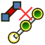

Cables DetachWireFromTerminal/de
|
 Cables LeiterVomAnschlussLösen |
| Menüeintrag |
|---|
| Leitungsverläufe → Leiter vom Anschluss lösen |
| Arbeitsbereich |
| Cables |
| Standardtastenkürzel |
| T R |
| Eingeführt in Version |
| 0.3.0 |
| Siehe auch |
| Cables LeiterMitAnschlussVerbinden, Cables Anschluss, Cables Leitungsverlauf |
Beschreibung
Der Befehl Cables LeiterVomAnschlussLösen löst zuvor befestigte Knoten eines  Leitungsverlaufs (hier ein WireFlex-Objekt einer Ader) von bestehenden Anschlüssen. Befestigungen von Knoten werden aus den speziellen Eigenschaften des WireFlex-Objekts entfernt, für Einzelheiten siehe Eigenschaften des Leitungsverlaufs.
Leitungsverlaufs (hier ein WireFlex-Objekt einer Ader) von bestehenden Anschlüssen. Befestigungen von Knoten werden aus den speziellen Eigenschaften des WireFlex-Objekts entfernt, für Einzelheiten siehe Eigenschaften des Leitungsverlaufs.
{kind=link}
Das Lösen verändert die bestehenden Positionen von Anschluss und Leiter nicht. Die elektrische Verbindung zwischen Anschluss und Leiter besteht nicht mehr. Die Eigenschaften in der Gruppe Net des Anschlusses werden entsprechend aktualisiert.
Wenn der Anschluss anschließend verschoben wird, bleiben die abgelösten Knotenpunkte des Leiters an ihrer Position. Wenn der Leitungsverlauf mit Cables Bearbeiten bearbeitet wird, können die abgelösten Knotenpunkte frei verschoben werden.
Anwendung
- Das WireFlex-Objekt in der 3D-Ansicht oder in der Baumansicht auswählen.
- Mit gedrückter STRG-Taste den Anschluss in der 3D-Ansicht oder in der Baumansicht auswählen.
- Den Befehl Leiter vom Anschluss lösen mit einer dieser Methoden ausführen:
- Die Schaltfläche Leiter vom Anschluss lösen drücken.
- Den Menüeintrag Leitungsverläufe → Leiter vom Anschluss lösen auswählen.
- Ein Rechtsklick in die 3D-Ansicht oder die Baumansicht und die Menüoption Leitungsverläufe → Leiter vom Anschluss lösen im Kontextmenü auswählen.
- Das Tastaturkürzel T dann R.
Hinweise
- Nach dem Ablösen hat der Anschluss einen freien Platz, um einen anderen Leiter anzuschließen.
- Siehe auch die Beschreibung und die Anwendung des Leitungsverlaufs für Einzelheiten zur Verwendung der WireFlex-Objekte.